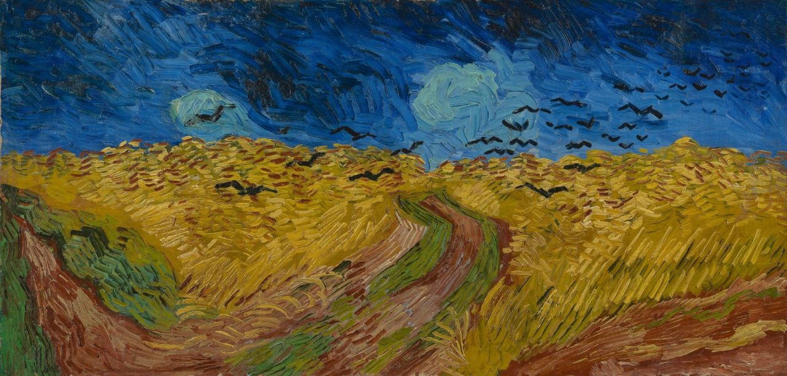

The Permanent Collection: Van Gogh's Masterpieces
Explore Vincent van Gogh's masterpieces in the museum's permanent exhibition. See his development as an artist in the museum galleries. Get to know his ideas and ambitions and step into Van Gogh's world.
What
Van Gogh's masterpieces
When
Always on view
A new view
In the Rietveld building, you step directly into Van Gogh’s world. You obviously see his masterpieces, but also his drawings and letters. You discover the ideas and ambitions behind his art.
Van Gogh experienced life and the world intensely and wanted his art to portray the great themes of life, such as anxiety, suffering, love and hope. You follow the on-going search of an artist who was constantly trying to improve himself. In this way, you get a new view of an artist you thought you knew.
➔ Address and opening hours ➔ Ticket prices ➔ COVID safety meassuresPaintings, drawings and letters
The story of his art is told throughout the galleries, not only giving a permanent position to his paintings but also to his drawings and letters. Important aspects of Van Gogh’s art are highlighted and studied through varying themes.
Van Gogh’s ambition to paint farmers, his search for colour and his personal interpretation of nature are given a prominent place in the museum, naturally featuring highlights like The Potato Eaters, The Bedroom, Sunflowers and Almond Blossom.
Inspiring the world
The huge impact of Van Gogh on the first generation of artists after his death will be shown by expressive works such as those by Maurice de Vlaminck and Kees van Dongen from the museum's own collection.
A video installation in the hall shows how, after his death, Van Gogh has become the important (pop)cultural icon that he is today.
Van Gogh's hope that his work might go on inspiring the world after his death has come true: until this very day he reaches out to millions of admirers.

In short
Van Gogh's Illness ➔Collection highlights
-
The Potato Eaters ➔
Vincent van Gogh, 1885
-
 Sunflowers ➔
Sunflowers ➔
Vincent van Gogh, 1889
-
 Almond Blossom ➔
Almond Blossom ➔
Vincent van Gogh, 1890
-
 Self-Portrait as a painter ➔
Self-Portrait as a painter ➔
Vincent van Gogh, 1887-1888
-
Self-Portrait with Grey Felt Hat ➔
Vincent van Gogh, 1885
-
Garden with Courting Couples: Square Saint-Pierre ➔
Vincent van Gogh, 1887
-
The Yellow House (The Street) ➔
Vincent van Gogh, 1888
-
 The Bedroom ➔
The Bedroom ➔
Vincent van Gogh, 1888
-
 The Sower ➔
The Sower ➔
Vincent van Gogh, 1888
-

Wheatfield with Crows ➔
Vincent van Gogh, 1890
-
 Wheatfield under Thunderclouds ➔
Wheatfield under Thunderclouds ➔
Vincent van Gogh, 1890
-
 Tree Roots ➔
Tree Roots ➔
Vincent van Gogh, 1890